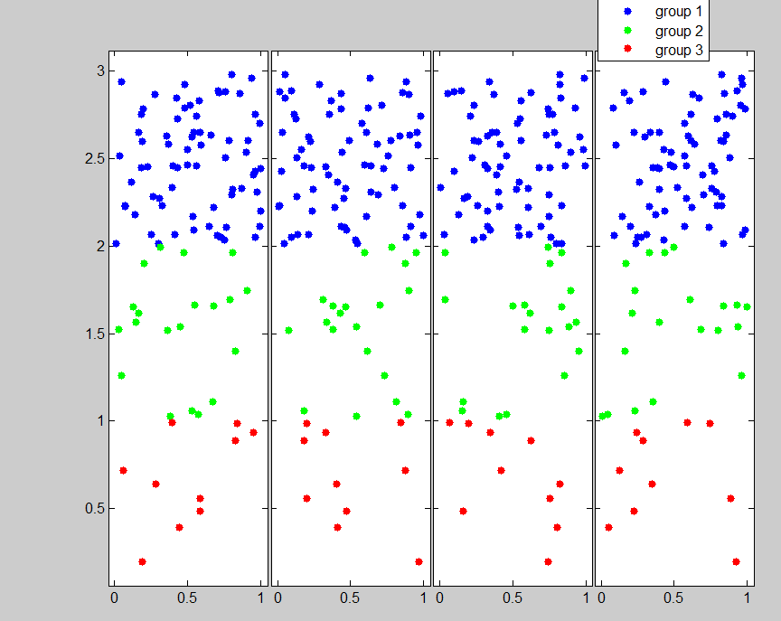
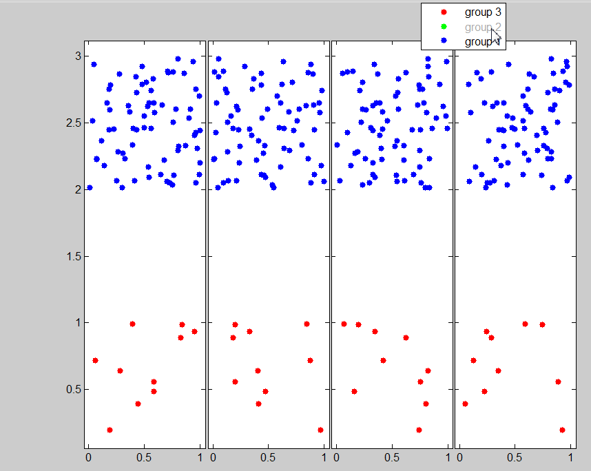

| Flexible Statistics Data Analysis Toolbox™ |
|
Hide or show symbols inside all subplots of a gplotmatrix (or similar multi-plot) clicking on the legend.
clickableMultiLegend(varargin)
[varargout]=clickableMultiLegend(varargin)
clickableMultiLegend hides or shows a graphical object displayed in the different panels of the gplotmatrix when the user clicks on the associated entry in the legend.
|
Note This function extends clickableLegend
by Ameya Deoras downloadable from The extension to multiple plots is realized by looking for graphic objects with the same DisplayName property of the one associated to the legend label. Therefore, clickableMultiLegend can also be used to turn on and off objects in subplots of different figures. |
clickableMultiLegend accepts the same parameters of the legend function and can be used in the same way.
% Generate a plot with multiple subplots (e.g. a gplotmatrix). % Simulate X X = rand(100,4); % Simulate y with 3 groups y = [rand(10,1); rand(20,1)+1; rand(70,1)+2]; group= [2*ones(10,1); ones(20,1); zeros(70,1)]; [H,AX,bigax] = gplotmatrix(X,y,group); % Set the DisplayName property (i.e. the texts of the legend) in all panels. % Note that in the gplotmatrix only one legend is visible. set(H(:,:,1),'DisplayName','group 1'); set(H(:,:,2),'DisplayName','group 2'); set(H(:,:,3),'DisplayName','group 3');By running the previous code you should obtain something similar to the following plot.

% Get the new legend texts directly from the plot
legnew = get(getappdata(AX(1,end),'LegendPeerHandle'),'String');
% Get the handles of the legend to update
hLines = findobj(AX(1,end), 'type', 'line');
% Update the legend and make them clickable
clickableMultiLegend(sort(hLines), legnew{:});
Now, it is possible to click with the
mouse on the different entries to hide/show a particular group of units. For example,
clicking on the entry "group 2" in the legend we hide group 2.

Function gplotmatrix generates the legend texts automatically, based on the values in the vector defined by option 'group'. In the example above we have re-defined manually the legend texts set by option 'group' (which are '1', '2' and '3') as "group 1", "group 2" and "group 3". More conveniently, especially when the number of groups is not known in advance, one may re-define the legend texts in a more general way as follows:
% it is convenient to reshape the gplotmatrix handles array to make it
% more manageable: while H is a 3-dimensional array with the third
% dimension associated to the groups, newH is 2-dimensional with lines
% associated to the subplots of the scatterplot and columns associated
% to the groups.
nleg = numel(hLines);
newH = reshape(H,numel(H)/nleg,nleg);
% redefine the legend texts
for i = 1 : nleg
set(newH(:,i),'DisplayName',['Redefined group n. ' num2str(i)]);
end
If the legend texts were clickable before the re-definition, they will
remain clickable.
|
|
chkoptions.html | closereqfs.html |
|